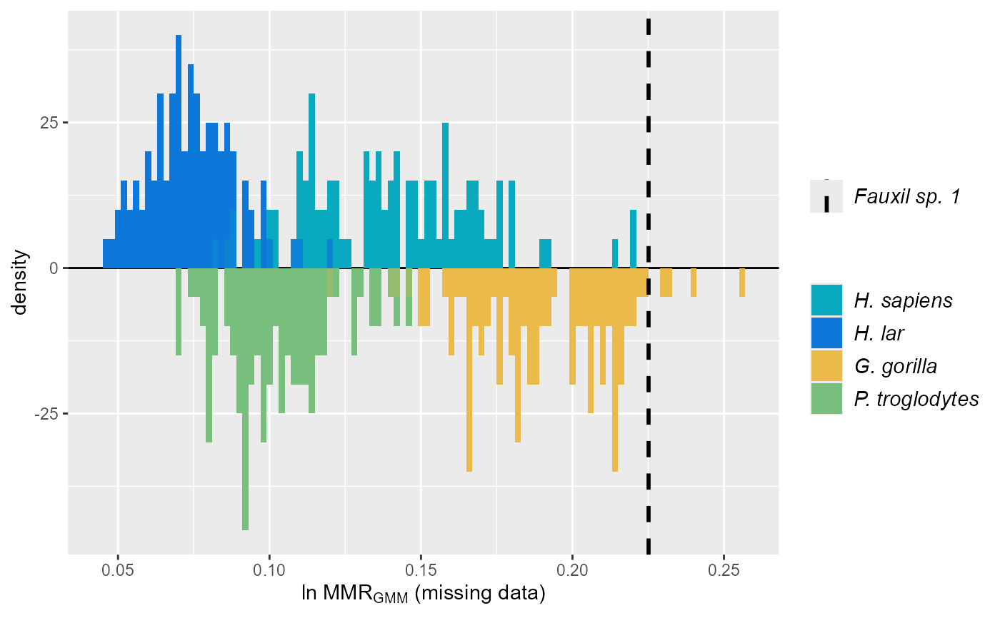
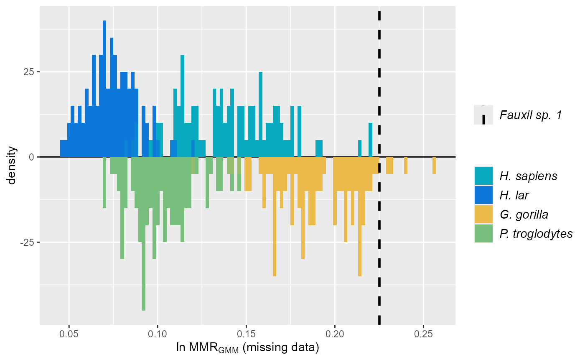
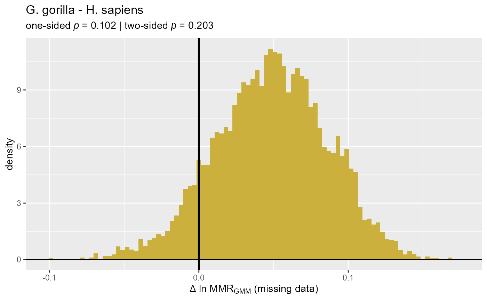
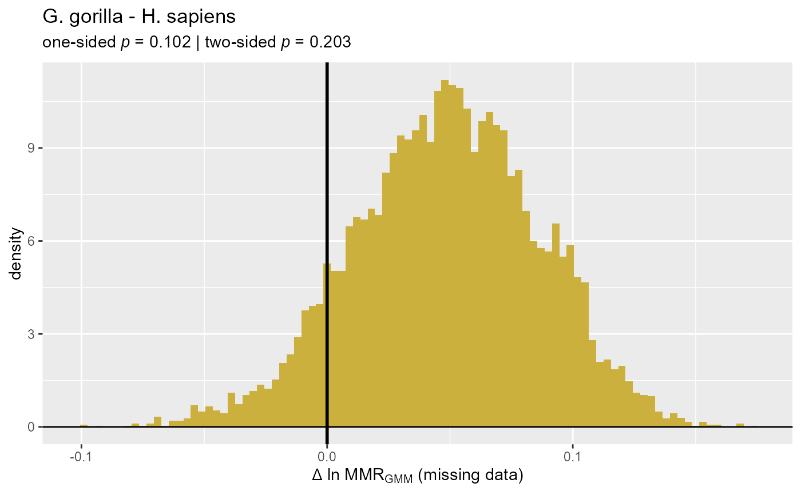

Plot SSDtest Object
plot.SSDtest.RdPlot the object output by SSDtest. N.B.: warning messages stating
"Removed n rows containing missing values (`geom_bar()`)." are generated
for any histogram that contains bars of height zero, which will be true for most histograms. This is
due to a known issue with how ggplot handles histograms (see
https://github.com/tidyverse/ggplot2/issues/3265),
and these warning messages can safely be ignored.
# S3 method for class 'SSDtest'
plot(
x,
est = 1,
type = "est",
diffs = NULL,
nbins = 100,
plottitle = NULL,
groupcols = NULL,
leg = T,
legpos = NULL,
legsize = 1,
legtitle = "",
titlesize = 2,
invert = NULL,
xlim = NULL,
ylim = NULL,
diffcol = "#CCB03D",
...
)Arguments
- x
An
SSDtestobject.- est
An integer specifiying the specific combination of methods (e.g., univariate method, centering algorithm) for the resampled estimates to be plotted. This integer corresponds to the row number in the table providing mean or median estimates by method combination when printing the
SSDtestobject.- type
A character string specifying the type of plot to produce.
"est"generates a plot of histograms of estimates for all of the samples inx."diff"gereates a plot of one or more histograms of all possible pairwise differences in estimates between pairs of samples, with the argumentdiffsspecifying which pairs to plot. Defaults to"est". Also, because the plotting function calculates histograms fortype="diff"by first calculating the difference between all possible pairs of one estimate taken from the two distributions of resampled values to be compared, plots usingtype="diff"can take a long time to be generated. The output ofplot.SSDtest()can be saved and plotted later without the need for recalculation.- diffs
Specifies which set of samples to plot pairwise differences for if
typeis"diff". If set to"all"it generates a single plot with all possible pairs. If given a vector of two or more integers, it plots all of the differences for that set of samples (e.g., settingdiffstoc(1,3,4)will plot three histograms: one for the differences in estimates between the first and third sample inx, one for the differences between the first and fourth sample, and one for the differences between the third and fourth sample). Any of the samples identified indiffsthat do not include data for the estimate specified inestwill not be included in pairwise comparisons (e.g., if"SSD"was included as a univariate method on a set of samples for which some had sex data and others didn't, the samples without sex data would be missing estimates for that method and thus would be excluded from pairwise comparisons of"SSD"estimates.) An error will be generated in cases where fewer then two samples with estimates are specified. Defaults to "all".- nbins
An integer specifiying the number of bins to sort data into for histograms.
- plottitle
A character string specifying a title to print at the top of the plot. If
NULL, no title is printed. Defaults toNULL.- groupcols
A vector of hexidecimal colors of length equal to the number of samples in
xfor use in plots whentypeis"est". Defaults to a palette generated byparula.- leg
A logical scalar indicating whether a legend should be provided. Defaults to
TRUE.- legpos
A character string specifying where to plot the legend. Acceptable values are
"left","top","right", and"bottom". Defaults to"right".- legsize
A numeric scalar specifying a multiplier for the legend font size relative to the default font size. Defaults to
1.- legtitle
A character string specifying a title to print at the top of the legend. If
NULL, no title is printed. Defaults toNULL.- titlesize
A numeric scalar specifying a multiplier for the title font size relative to the default font size. Defaults to
2.- invert
An integer vector specifying the group number of histograms to invert and project below the zero count line, where group number is determined by the order of datasets provided first in
fossil, then incomp. IfNULL, no histograms are inverted. Defaults toNULL.- xlim
A numeric vector with two elements specifying the minimum and maximum values of the x-axis. If
xlimisNULL, default values generated byggplotare used.- ylim
A numeric vector with two elements specifying the minimum and maximum values of the y-axis. If
ylimisNULL, default values generated byggplotare used.- diffcol
A color used to fill in histogram bars for differences in parameter values between two samples. defaults to
"#CCB03D".- ...
Arguments to be passed to other functions. Not currently used.
Examples
SSDvars <- c("FHSI", "TPML", "TPMAP", "TPLAP", "HHMaj", "HHMin", "RHMaj", "RHMin", "RDAP", "RDML")
test_faux_multi1 <- SSDtest(
fossil=list("Fauxil sp. 1"=fauxil[fauxil$Species=="Fauxil sp. 1", SSDvars]),
comp=list("G. gorilla"=apelimbart[apelimbart$Species=="Gorilla gorilla", SSDvars],
"H. sapiens"=apelimbart[apelimbart$Species=="Homo sapiens", SSDvars],
"P. troglodytes"=apelimbart[apelimbart$Species=="Pan troglodytes", SSDvars],
"H. lar"=apelimbart[apelimbart$Species=="Hylobates lar", SSDvars]),
fossilsex=NULL,
compsex=list("G. gorilla"=apelimbart[apelimbart$Species=="Gorilla gorilla", "Sex"],
"H. sapiens"=apelimbart[apelimbart$Species=="Homo sapiens", "Sex"],
"P. troglodytes"=apelimbart[apelimbart$Species=="Pan troglodytes", "Sex"],
"H. lar"=apelimbart[apelimbart$Species=="Hylobates lar", "Sex"]),
methsUni=c("SSD", "MMR", "BDI"),
methsMulti=c("GMM"),
datastruc="both",
nResamp=100,
templatevar="FHSI")
#> Warning: The number of possible combinations (9.60207663113656e+30) exceeds the user-specified limit. Monte Carlo sampling will be used.
#> Warning: The number of possible combinations (9.60207663113656e+30) exceeds the user-specified limit. Monte Carlo sampling will be used.
#> Warning: The number of possible combinations (9.60207663113656e+30) exceeds the user-specified limit. Monte Carlo sampling will be used.
#> Warning: The number of possible combinations (9.60207663113656e+30) exceeds the user-specified limit. Monte Carlo sampling will be used.
test_faux_multi1
#> SSDtest Object
#>
#> Comparative data set:
#> sample n female n male n unspecified
#> Fauxil sp. 1 0 0 16
#> G. gorilla 47 47 0
#> H. sapiens 47 47 0
#> P. troglodytes 47 47 0
#> H. lar 47 47 0
#> number of variables: 10
#> variable names: FHSI, TPML, TPMAP, TPLAP, HHMaj, HHMin, RHMaj, RHMin, RDAP, RDML
#> SSD estimate methods (univariate):
#> SSD, MMR, BDI
#> SSD estimate methods (multivariate):
#> GMM
#> Centering algorithms:
#> geometric mean
#> Multivariate sampling with complete or missing data:
#> complete and missing
#> Number of unique combinations of univariate method, multivariate method,
#> centering algorithm, and complete or missing data structure: 6
#> Resampling data structure:
#> sample n resampled data sets resampling type sampling
#> Fauxil sp. 1 1 exact without replacement
#> G. gorilla 100 Monte Carlo without replacement
#> H. sapiens 100 Monte Carlo without replacement
#> P. troglodytes 100 Monte Carlo without replacement
#> H. lar 100 Monte Carlo without replacement
#> missing data resampling structure:
#> sampling individuals, then imposing missing data pattern
#> number of individuals in each resampled data set: 16
#> proportion of missing data in resampling structure: 0.775
#> other resampling parameters:
#> ratio variables (if present): natural log of ratio
#> matchvars = FALSE
#> na.rm = TRUE
#>
#> Median resampled estimates for each combination of methods:
#> methodUni methodMulti center datastructure Fauxil sp. 1 G. gorilla
#> 1 SSD GMM geomean complete NA 0.2299
#> 2 SSD GMM geomean missing NA 0.2153
#> 3 MMR GMM geomean complete NA 0.2276
#> 4 MMR GMM geomean missing 0.2251 0.1874
#> 5 BDI GMM geomean complete NA 0.2150
#> 6 BDI GMM geomean missing 0.2007 0.1654
#> H. sapiens P. troglodytes H. lar
#> 1 0.1476 0.0764 0.0301
#> 2 0.1137 0.0817 0.0449
#> 3 0.1579 0.1156 0.0832
#> 4 0.1396 0.1000 0.0739
#> 5 0.1520 0.1119 0.0808
#> 6 0.1272 0.0921 0.0668
#>
#> p-values (one-sided; null: first sample less or equally dimorphic as second sample):
#> SSD:GMM:geomean:complete SSD:GMM:geomean:missing
#> Fauxil sp. 1 - G. gorilla NA NA
#> Fauxil sp. 1 - H. sapiens NA NA
#> Fauxil sp. 1 - P. troglodytes NA NA
#> Fauxil sp. 1 - H. lar NA NA
#> G. gorilla - H. sapiens 0.0020 0.0000
#> G. gorilla - P. troglodytes 0.0000 0.0000
#> G. gorilla - H. lar 0.0000 0.0000
#> H. sapiens - P. troglodytes 0.0186 0.0571
#> H. sapiens - H. lar 0.0000 0.0000
#> P. troglodytes - H. lar 0.0518 0.1333
#> G. gorilla - Fauxil sp. 1 NA NA
#> H. sapiens - Fauxil sp. 1 NA NA
#> P. troglodytes - Fauxil sp. 1 NA NA
#> H. lar - Fauxil sp. 1 NA NA
#> H. sapiens - G. gorilla 0.9980 1.0000
#> P. troglodytes - G. gorilla 1.0000 1.0000
#> H. lar - G. gorilla 1.0000 1.0000
#> P. troglodytes - H. sapiens 0.9814 0.9429
#> H. lar - H. sapiens 1.0000 1.0000
#> H. lar - P. troglodytes 0.9482 0.8667
#> MMR:GMM:geomean:complete MMR:GMM:geomean:missing
#> Fauxil sp. 1 - G. gorilla NA 0.0400
#> Fauxil sp. 1 - H. sapiens NA 0.0000
#> Fauxil sp. 1 - P. troglodytes NA 0.0000
#> Fauxil sp. 1 - H. lar NA 0.0000
#> G. gorilla - H. sapiens 0.0034 0.1019
#> G. gorilla - P. troglodytes 0.0000 0.0022
#> G. gorilla - H. lar 0.0000 0.0001
#> H. sapiens - P. troglodytes 0.0442 0.1293
#> H. sapiens - H. lar 0.0000 0.0120
#> P. troglodytes - H. lar 0.0082 0.0993
#> G. gorilla - Fauxil sp. 1 NA 0.9600
#> H. sapiens - Fauxil sp. 1 NA 1.0000
#> P. troglodytes - Fauxil sp. 1 NA 1.0000
#> H. lar - Fauxil sp. 1 NA 1.0000
#> H. sapiens - G. gorilla 0.9966 0.8981
#> P. troglodytes - G. gorilla 1.0000 0.9978
#> H. lar - G. gorilla 1.0000 0.9999
#> P. troglodytes - H. sapiens 0.9558 0.8707
#> H. lar - H. sapiens 1.0000 0.9880
#> H. lar - P. troglodytes 0.9918 0.9007
#> BDI:GMM:geomean:complete BDI:GMM:geomean:missing
#> Fauxil sp. 1 - G. gorilla NA 0.0600
#> Fauxil sp. 1 - H. sapiens NA 0.0100
#> Fauxil sp. 1 - P. troglodytes NA 0.0000
#> Fauxil sp. 1 - H. lar NA 0.0000
#> G. gorilla - H. sapiens 0.0057 0.1204
#> G. gorilla - P. troglodytes 0.0000 0.0033
#> G. gorilla - H. lar 0.0000 0.0000
#> H. sapiens - P. troglodytes 0.0465 0.1265
#> H. sapiens - H. lar 0.0000 0.0111
#> P. troglodytes - H. lar 0.0091 0.1007
#> G. gorilla - Fauxil sp. 1 NA 0.9400
#> H. sapiens - Fauxil sp. 1 NA 0.9900
#> P. troglodytes - Fauxil sp. 1 NA 1.0000
#> H. lar - Fauxil sp. 1 NA 1.0000
#> H. sapiens - G. gorilla 0.9943 0.8796
#> P. troglodytes - G. gorilla 1.0000 0.9967
#> H. lar - G. gorilla 1.0000 1.0000
#> P. troglodytes - H. sapiens 0.9535 0.8735
#> H. lar - H. sapiens 1.0000 0.9889
#> H. lar - P. troglodytes 0.9909 0.8993
#>
#> p-values (two-sided):
#> SSD:GMM:geomean:complete SSD:GMM:geomean:missing
#> Fauxil sp. 1 - G. gorilla NA NA
#> Fauxil sp. 1 - H. sapiens NA NA
#> Fauxil sp. 1 - P. troglodytes NA NA
#> Fauxil sp. 1 - H. lar NA NA
#> G. gorilla - H. sapiens 0.0073 0.0000
#> G. gorilla - P. troglodytes 0.0000 0.0000
#> G. gorilla - H. lar 0.0000 0.0000
#> H. sapiens - P. troglodytes 0.0382 0.1429
#> H. sapiens - H. lar 0.0000 0.0000
#> P. troglodytes - H. lar 0.0956 0.3333
#> MMR:GMM:geomean:complete MMR:GMM:geomean:missing
#> Fauxil sp. 1 - G. gorilla NA 0.1200
#> Fauxil sp. 1 - H. sapiens NA 0.0000
#> Fauxil sp. 1 - P. troglodytes NA 0.0000
#> Fauxil sp. 1 - H. lar NA 0.0000
#> G. gorilla - H. sapiens 0.0134 0.2035
#> G. gorilla - P. troglodytes 0.0000 0.0036
#> G. gorilla - H. lar 0.0000 0.0001
#> H. sapiens - P. troglodytes 0.0742 0.2566
#> H. sapiens - H. lar 0.0000 0.0380
#> P. troglodytes - H. lar 0.0259 0.2131
#> BDI:GMM:geomean:complete BDI:GMM:geomean:missing
#> Fauxil sp. 1 - G. gorilla NA 0.1200
#> Fauxil sp. 1 - H. sapiens NA 0.0100
#> Fauxil sp. 1 - P. troglodytes NA 0.0000
#> Fauxil sp. 1 - H. lar NA 0.0000
#> G. gorilla - H. sapiens 0.0157 0.2414
#> G. gorilla - P. troglodytes 0.0000 0.0040
#> G. gorilla - H. lar 0.0000 0.0000
#> H. sapiens - P. troglodytes 0.0789 0.2507
#> H. sapiens - H. lar 0.0000 0.0385
#> P. troglodytes - H. lar 0.0271 0.2109
plot(test_faux_multi1)
#> Warning: Removed 8 rows containing missing values or values outside the scale range
#> (`geom_bar()`).
#> Warning: Removed 8 rows containing missing values or values outside the scale range
#> (`geom_bar()`).
speciescolors <- c("Fauxil sp. 1"="#352A87", "G. gorilla"="#EABA4B",
"H. sapiens"="#09A9C0", "P. troglodytes"="#78BE7C",
"H. lar"="#0D77DA")
# change colors of sample distributions
plot(test_faux_multi1, groupcols=speciescolors)
#> Warning: Removed 8 rows containing missing values or values outside the scale range
#> (`geom_bar()`).
#> Warning: Removed 8 rows containing missing values or values outside the scale range
#> (`geom_bar()`).
 # plot estimates for the fourth methcombo (GMM and MMR)
plot(test_faux_multi1, est=4, groupcols=speciescolors)
#> Warning: Removed 8 rows containing missing values or values outside the scale range
#> (`geom_bar()`).
#> Warning: Removed 8 rows containing missing values or values outside the scale range
#> (`geom_bar()`).
# plot estimates for the fourth methcombo (GMM and MMR)
plot(test_faux_multi1, est=4, groupcols=speciescolors)
#> Warning: Removed 8 rows containing missing values or values outside the scale range
#> (`geom_bar()`).
#> Warning: Removed 8 rows containing missing values or values outside the scale range
#> (`geom_bar()`).
 # invert second and fourth sample distributions
plot(test_faux_multi1, est=4, groupcols=speciescolors, invert=c(2,4))
#> Warning: Removed 4 rows containing missing values or values outside the scale range
#> (`geom_bar()`).
#> Warning: Removed 4 rows containing missing values or values outside the scale range
#> (`geom_bar()`).
#> Warning: Removed 4 rows containing missing values or values outside the scale range
#> (`geom_bar()`).
#> Warning: Removed 4 rows containing missing values or values outside the scale range
#> (`geom_bar()`).

# plot distributions of differences among sample estimates for method combination 4
plot(test_faux_multi1, est=4, type="diff")
#> Warning: Removed 2 rows containing missing values or values outside the scale range
#> (`geom_bar()`).
#> Warning: Removed 2 rows containing missing values or values outside the scale range
#> (`geom_bar()`).
#> Warning: Removed 2 rows containing missing values or values outside the scale range
#> (`geom_bar()`).
#> Warning: Removed 2 rows containing missing values or values outside the scale range
#> (`geom_bar()`).
#> Warning: Removed 2 rows containing missing values or values outside the scale range
#> (`geom_bar()`).
#> Warning: Removed 2 rows containing missing values or values outside the scale range
#> (`geom_bar()`).
#> Warning: Removed 2 rows containing missing values or values outside the scale range
#> (`geom_bar()`).
#> Warning: Removed 2 rows containing missing values or values outside the scale range
#> (`geom_bar()`).
#> Warning: Removed 2 rows containing missing values or values outside the scale range
#> (`geom_bar()`).
#> Warning: Removed 2 rows containing missing values or values outside the scale range
#> (`geom_bar()`).
# invert second and fourth sample distributions
plot(test_faux_multi1, est=4, groupcols=speciescolors, invert=c(2,4))
#> Warning: Removed 4 rows containing missing values or values outside the scale range
#> (`geom_bar()`).
#> Warning: Removed 4 rows containing missing values or values outside the scale range
#> (`geom_bar()`).
#> Warning: Removed 4 rows containing missing values or values outside the scale range
#> (`geom_bar()`).
#> Warning: Removed 4 rows containing missing values or values outside the scale range
#> (`geom_bar()`).

# plot distributions of differences among sample estimates for method combination 4
plot(test_faux_multi1, est=4, type="diff")
#> Warning: Removed 2 rows containing missing values or values outside the scale range
#> (`geom_bar()`).
#> Warning: Removed 2 rows containing missing values or values outside the scale range
#> (`geom_bar()`).
#> Warning: Removed 2 rows containing missing values or values outside the scale range
#> (`geom_bar()`).
#> Warning: Removed 2 rows containing missing values or values outside the scale range
#> (`geom_bar()`).
#> Warning: Removed 2 rows containing missing values or values outside the scale range
#> (`geom_bar()`).
#> Warning: Removed 2 rows containing missing values or values outside the scale range
#> (`geom_bar()`).
#> Warning: Removed 2 rows containing missing values or values outside the scale range
#> (`geom_bar()`).
#> Warning: Removed 2 rows containing missing values or values outside the scale range
#> (`geom_bar()`).
#> Warning: Removed 2 rows containing missing values or values outside the scale range
#> (`geom_bar()`).
#> Warning: Removed 2 rows containing missing values or values outside the scale range
#> (`geom_bar()`).
 # plot differences between second and third samples
plot(test_faux_multi1, est=4, type="diff", diffs=c(2,3))
#> Warning: Removed 2 rows containing missing values or values outside the scale range
#> (`geom_bar()`).

# plot differences between second and third samples
plot(test_faux_multi1, est=4, type="diff", diffs=c(2,3))
#> Warning: Removed 2 rows containing missing values or values outside the scale range
#> (`geom_bar()`).
